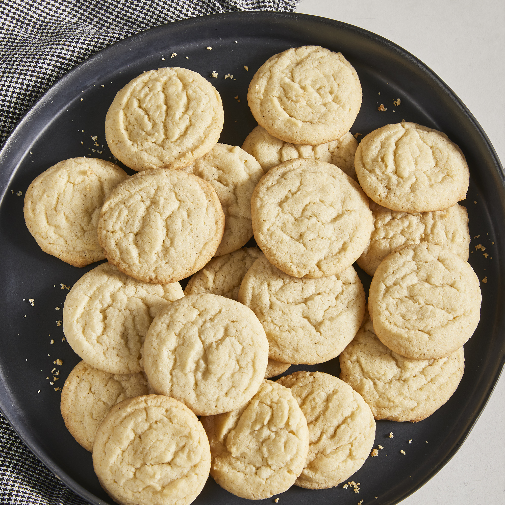

Easy Sugar Cookies

Description
Quick and easy sugar cookies! They are really good, plain or with candies in them. My friend uses chocolate mints on top, and they're great!
Ingredients
- 2 ¾ all-purpose flour
- 1 teaspoon baking soda
- ½ teaspoon baking powder
- 1 cup butter, softened
- 1 ½ cups white sugar
- 1 egg
- 1 teaspoon vanilla extract
Directions
- Preheat the oven to 375 degrees F (190 degrees C).
- Stir together flour, baking soda, and baking powder in a small bowl.
- Cream butter and sugar until smooth in a large bowl. Beat in egg and vanilla. Gradually blend in dry ingredients. Roll rounded teaspoonfuls of dough into balls, and place onto ungreased cookie sheets.
- Bake in the preheated oven until golden, 8 to 10 minutes. Let stand on cookie sheet for 2 minutes before removing to cool on wire racks.